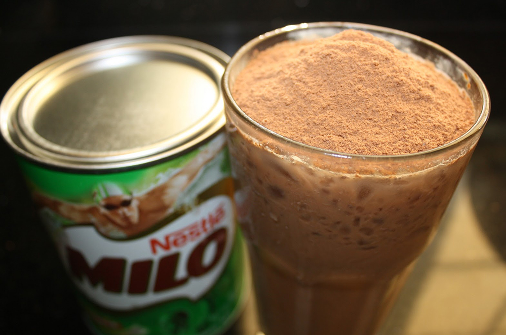

Milo

Milo, baby!
Ingredients
Milo
Milk
Cup/ Mug
Steps
Add milk to your mug or cup. Only fill about halfway.
Add two teaspoons of Milo to the milk. Stir thoughrouly.
Fill the rest of the cup with milk.
Stir again.
If you'd like it hot, add to microwave for 2-3 min.